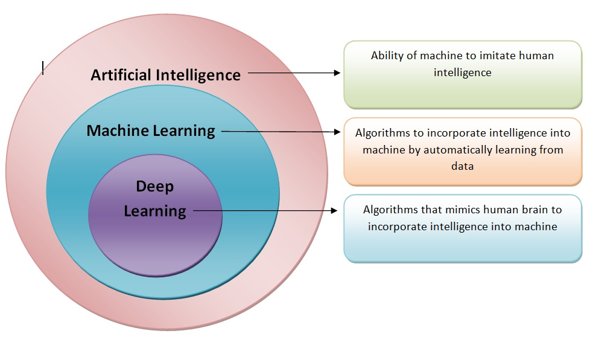

COURSE AND THIER DETAILS

- Machine Learning(ML):
- This course covers the basics of machine learning algorithms and techniques used to build predictive models from data. Topics include supervised and unsupervised learning, regression, classification, clustering, and evaluation metrics. Students also gain practical experience through hands-on programming exercises and projects.
- Artificial Intelligence (AI):
- Artificial Intelligence (AI) is a rapidly growing field that focuses on creating intelligent machines capable of performing tasks that typically require human intelligence. This course provides a comprehensive introduction to the principles, techniques, and applications of AI, covering both theoretical foundations and practical implementations.
- Deep Learning(DL):
- Deep Learning is a subfield of machine learning that focuses on algorithms and models inspired by the structure and function of the human brain's neural networks. This course provides an in-depth exploration of deep learning architectures, techniques, applications, and theoretical foundations.